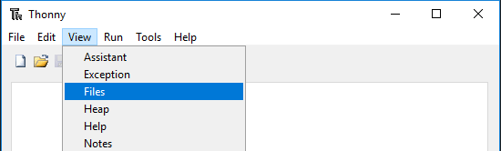
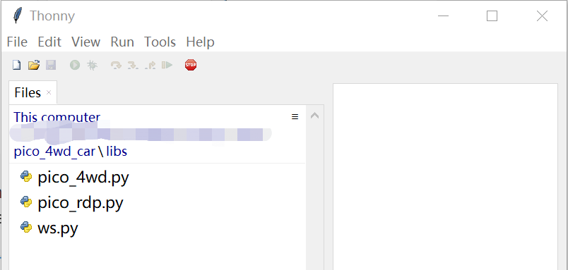
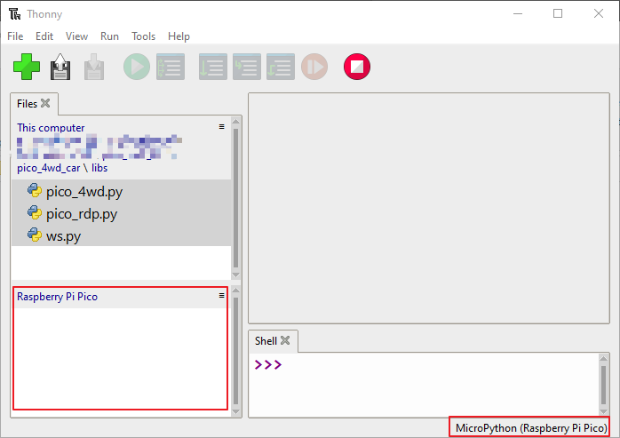
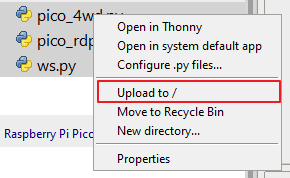
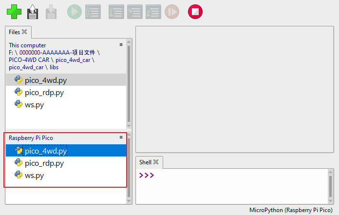

Download and Upload the Code¶
Download the Code
Download the relevant code from the link below.
Or check out the code at Pico-4wd Car - GitHub
Upload the Libraries to Pico¶
Before using Pico-4wd Car, you need to save its related libraries in Raspberry Pi Pico.
Open Thonny IDE, in the top navigation bar, click View -> Files.

Switch the path to the folder where you downloaded the code package before, and then go to the
pico_4wd_car/libsfolder.
Plug the Pico into your computer with a micro USB cable and click on the “MicroPython (Raspberry Pi Pico)” interpreter in the bottom right corner.

Then the drive
Raspberry Pi Pico/will appear, and the next thing we need to do is to upload the library files to this drive.
Select these 3 files, right-click and click Upload to, it will take a while to upload.

Now you will see the files you just uploaded inside your drive
Raspberry Pi Pico.